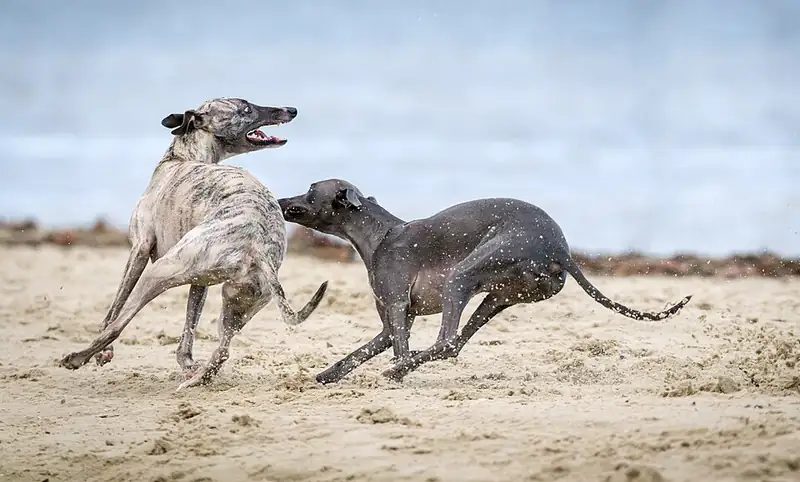

West Beach, St Kilda West
West Beach is a beach in St Kilda West, in the Port Phillip City Council area, good for all ages. Jacoby Reserve/Park St (bus) is a 5-minute walk away and the nearest public toilet is about 132 m away with a baby change table.

.jpg){kind=link}
Quick facts
- Toilets
- 132 m away, baby change, accessible
- Public transport
- Jacoby Reserve/Park St, bus (routes 606), 5 min walk
This page has basic info from the map: name, location and type. We have not checked the details yet. Know this place? Tell us.
Questions parents ask
- Where is West Beach?
- West Beach is in St Kilda West, Victoria.
- Is West Beach free?
- Yes. It is a public beach, free to visit.
- Are there toilets at West Beach?
- The nearest public toilet is about 132 m away, with a baby change table.
- How do I get to West Beach by public transport?
- The closest stop is Jacoby Reserve/Park St (routes 606), a 5-minute walk.
Nearby places
- Cummings Reserve
Park · St Kilda WestToilet nearbyFreeTram 3 min walk
- West Beach Bathers Pavilion
Cafe or restaurant · St Kilda WestToilet nearbyBus 4 min walk
- Stenhouse Reserve
Park · St Kilda WestToilet nearbyFreeBus 3 min walk
- Catani Gardens Playspace
Playground · St Kilda WestToilet nearbyFreeBus 4 min walk
- Playground at Jacoby Reserve
Playground · St Kilda WestToilet nearbyFreeBus 1 min walk
- Middle Park Beach
Beach · Middle ParkToilet nearbyFreeTram 3 min walk
- Middle Park Library
Library · Middle ParkToilet nearbyFreeBus 1 min walk
- Acland Court
Shopping centre · St KildaBus 1 min walk